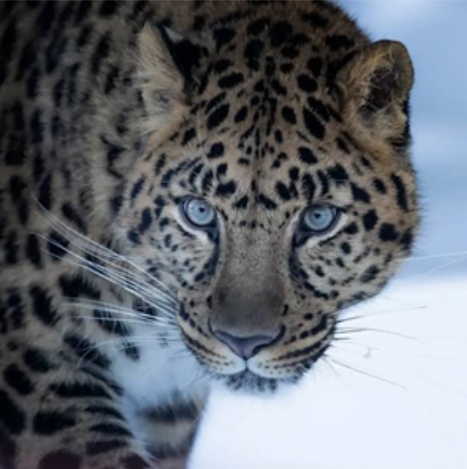
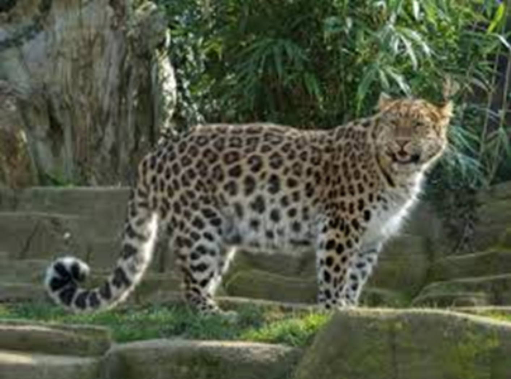
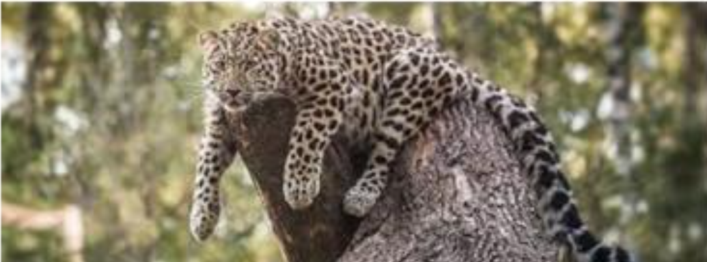

Introduction
Amur leopards (Panthera pardus orientalis) are possibly what you think of when you see a leopard: yellow, black, and white. This species of leopard is among the least populated species on earth, and for them to survive, a lot of action would be required.

Where do they live?
Amur Leopards live in the far east of Russia, north-east China and possibly North Korea. There are only expected ~100 amur leopards alive which live in 2,500 km². They are also the rarest ‘big cat’ in the world
 Where do they hunt and who are they hunted by?
These leopards are mainly carnivores, mainly eating larger animals such as deer (sika & roe deer) and wild boars if possible, when there are not the larger animals available, they may try to aim for smaller animals such as badgers, birds, mice and weasels. Amur leopards are great hunters so they are not naturally hunted by any other animals, other than humans.
What they can do
These leopards are great swimmers, so they can swim across rivers and lakes. They can also run at speeds of 37mph, which is partially due to their size, being up to 135 cm and their tail being from 82cm. Amur leopards can also climb trees.